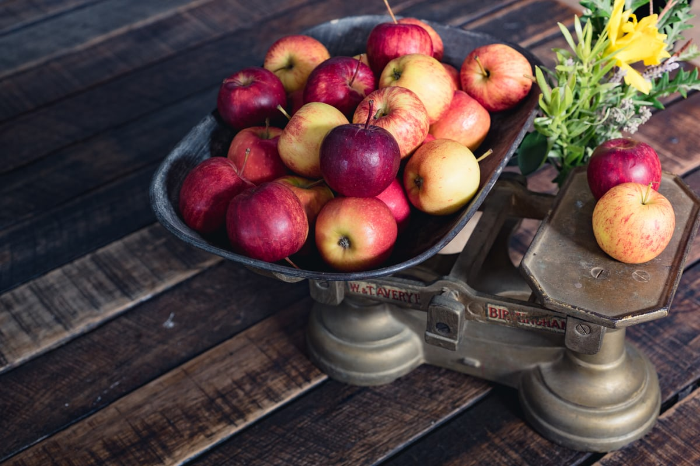
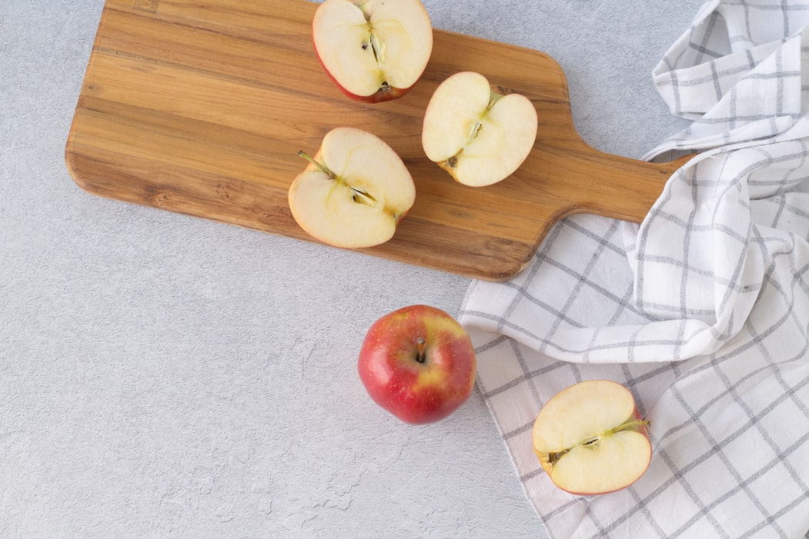
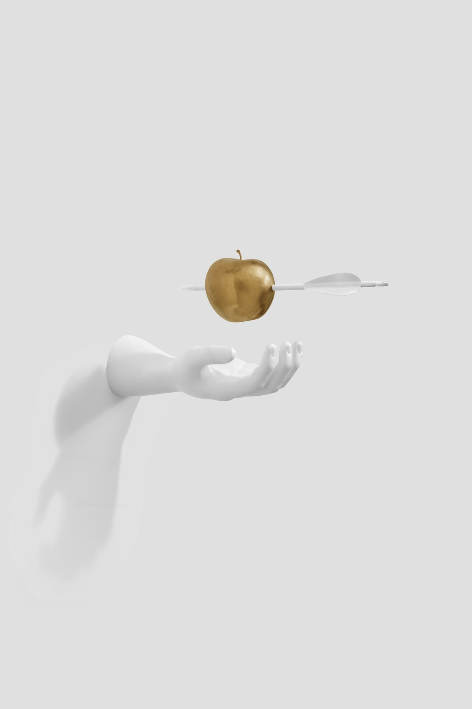
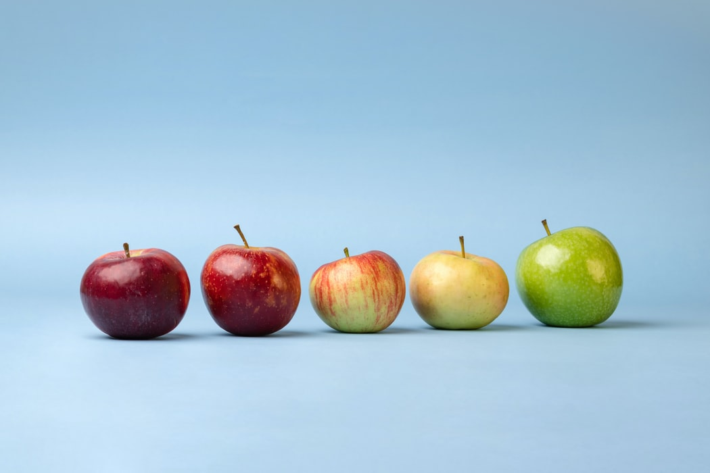

The ancestor of the domestic apple is the Malus sieversii f. A taxonomic species within the family Rosaceae – the domestic apple tree.
4th century106616071939
Did You Know?

Americans eat an average of 19 pounds of apples per year.

The UK is the only country that grows apples especially for cooking.

During the Siege of Leningrad, several botanists who worked at the gene bank chose to starve to death rather than eat the seeds stored there.

To conform to EC grading criteria, apple growers have to match standards of size, color, shape but there's no criteria for smell and flavor.